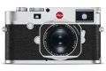
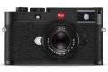
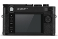
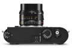
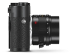
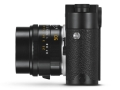
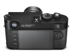
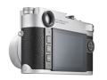

器材库 > 35mm画幅可换镜头数码相机 > M10

规格总览
产品类型
35mm画幅可换镜头数码相机
发布日期
2017-01-18
影像规格
影像传感器
CMOS
影像传感器尺寸
36×24mm
有效像素
2400万
影像处理器
徕卡Maestro-II图像处理器
静态图像格式
JPEG, DNG
静态图像质量
DNG：[24MP] 5976×3992JPEG：[24MP] 5952×3968, [12MP] 4256×2832, [6MP] 2976×1984
镜头和对焦
镜头卡口
Leica M
兼容镜头
徕卡M镜头，也可通过镜头适配器使用徕卡R镜头
曝光控制
测光模式
中央重点测光, 点测光, 多区测光
测光范围
1EV~20EV
快门速度
125 - 1/4000秒
闪光同步速度
1/180秒
ISO感光度
ISO 100 - ISO 50000，可从ISO 200起以1/3 ISO为递增单位，也可选择自动控制或手动设置。
白平衡
自动、手动，8个预设值，色温选择
自拍
2秒 / 12秒
连拍
每秒5张照片，连拍30至40张
取景器/显示屏
取景器
亮框旁轴取景器
取景放大倍率
0.73倍
LCD类型
彩色TFT LCD
LCD尺寸
3.0英寸
LCD像素
约104万
视野率
100%
文件输入/输出
存储卡
SD/SDHC, SDXC
无线功能
Wi-Fi
电源
电池
锂离子充电电池
机身规格
材质
镁合金铸造全金属机身，合成皮套，顶盖及底盖以黄铜制成，黑色或银色镀铬的表面处理
颜色
银色, 黑色
尺寸
139×38.5×80mm
重量
含电池约660g
其它
配件端口
热靴, 脚架螺丝孔
支持语言
中文（简体）, 中文（繁体）, 英语, 日语, 法语, 德语, 意大利语, 韩语, 葡萄牙语, 俄语, 西班牙语
工作温度
0 - 40℃
附件
充电器含2条电源线，1条车用充电线，锂电池，肩带，机壳卡口顶盖，配件靴座护盖
匿名网友2018-07-14 09:254 分
操作性 4.50功能性 4.50美观性 5.00趣味性 4.50耐用性 3.00性价比 3.00解像力 3.00色彩还原 4.50
liuels2018-01-09 11:334.38 分
操作性 4.50功能性 4.50美观性 5.00趣味性 5.00耐用性 4.00性价比 3.00解像力 4.00色彩还原 5.00
产品图 / 样片
M10

M10

M10

M10

M10

M10

M10

M10
评测 / 相关文章
- 详细内容 （存档）
- ［资讯］堪比顶级APS-C DxO公布徕卡M10成绩 （存档）
- ［资讯］徕卡M10相机组装过程揭秘 （存档）
- ［资讯］为摄影喝彩 新里程碑徕卡M10北京媒体会 （存档）
- ［资讯］小有提升 徕卡M10固件V1.3.4.0登场 （存档）
- ［资讯］十倍奉还 徕卡M10真机图赏 （存档）
- ［试用］韩城攻略 徕卡M10实拍样张 （存档）
- ［资讯］古往今来 徕卡M10与过往产品数据对比 （存档）
- ［资讯］徕卡M10官方实拍样张 （存档）